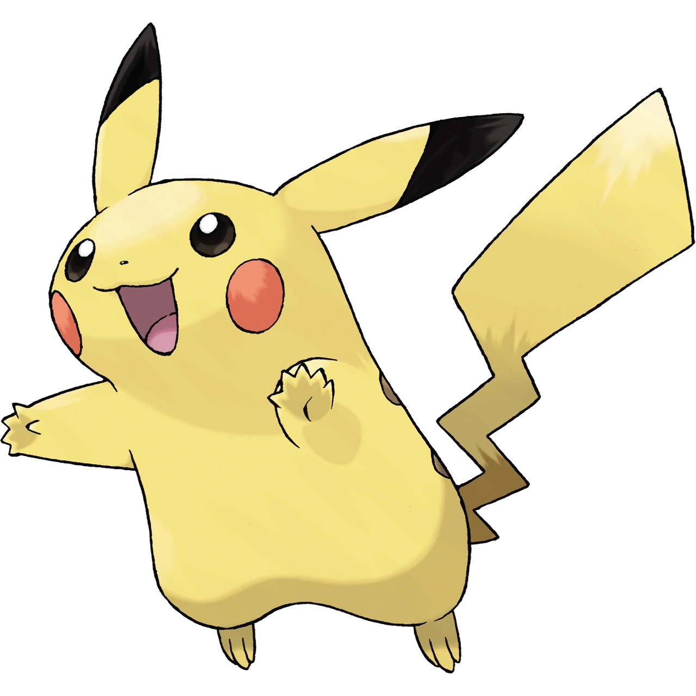

KANTO POKÉDEX
← 포켓몬 목록으로
#025

피카츄
전기
쥐 포켓몬
특성
정전기
피뢰침 (숨겨진 특성)
울음소리
포획률 & 성비
포획률
190 / 255
성비
♂ 50%
50% ♀
생태
처음 보는 것에게는 전격을 맞춘다. 새까맣게 탄 나무열매가 떨어져 있다는 것은 전격의 세기를 조절하지 못했다는 증거다. 라이츄로 진화한다.
← #024 아보크
#026 라이츄 →